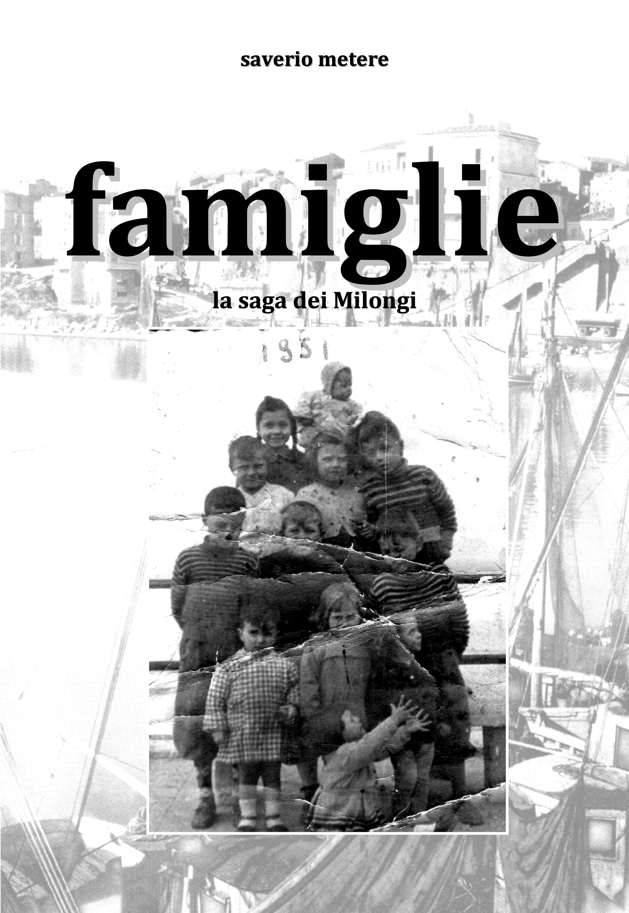
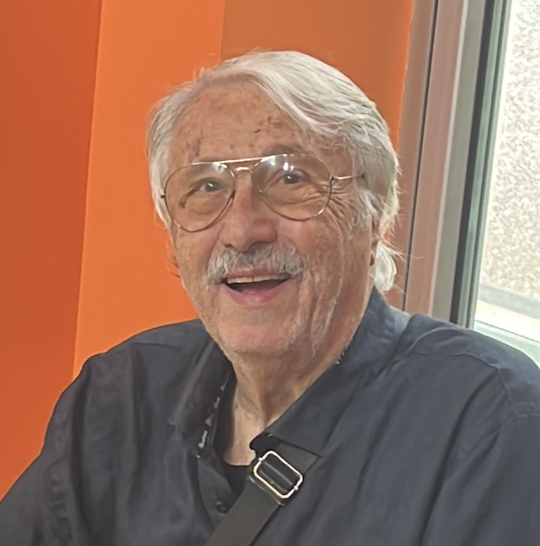
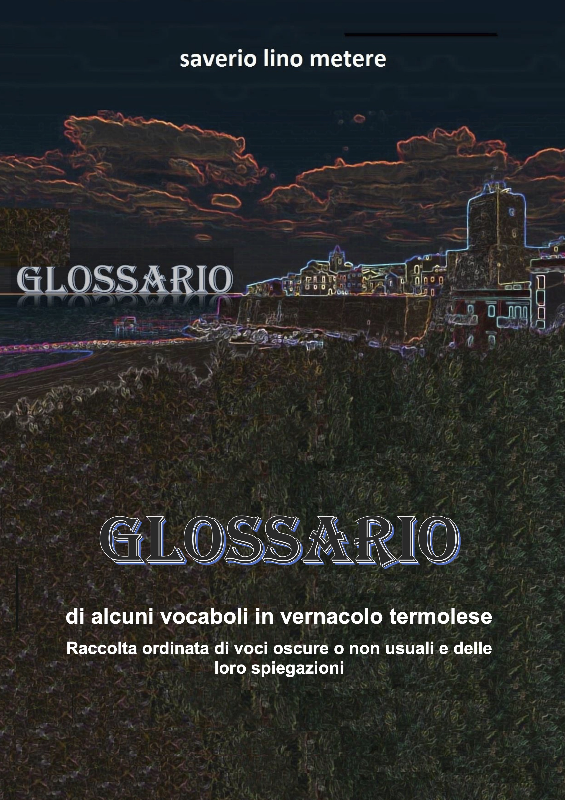
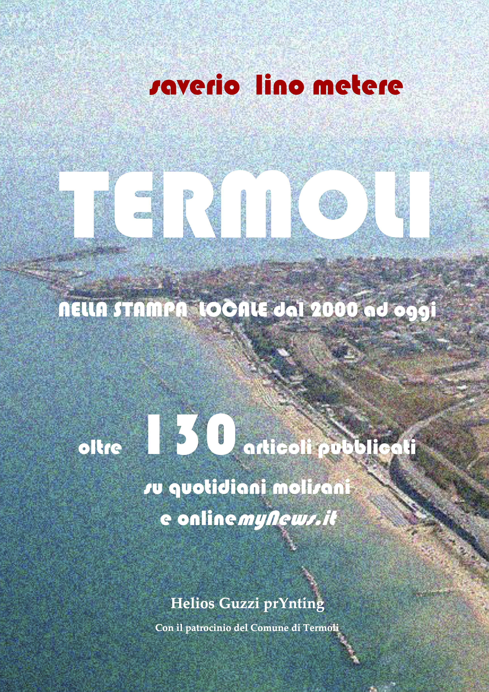
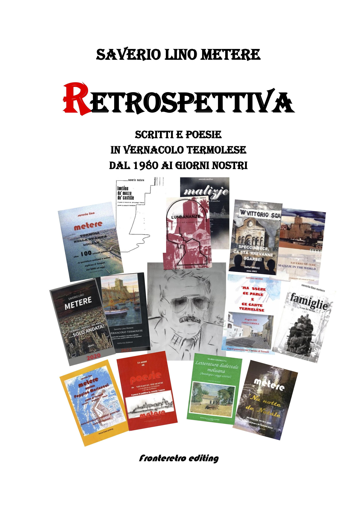
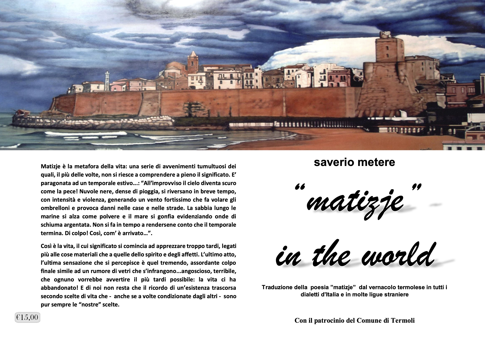
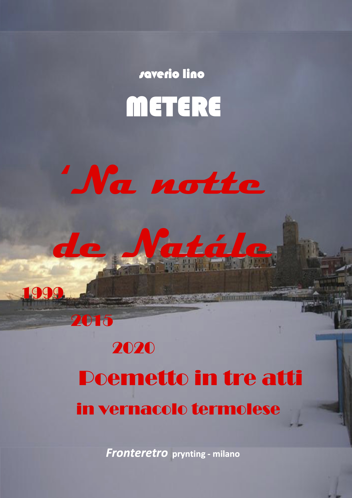
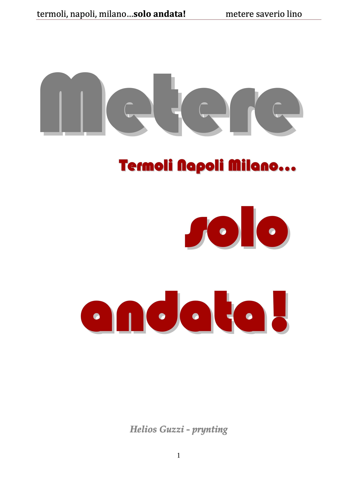

01

Famiglie
Un racconto autobiografico costruito attraverso persone, generazioni, luoghi e legami familiari.
Termoli / Napoli / Milano
Architetto · docente · poeta e scrittore
Oltre quarant’anni di poesia, memoria e ricerca dedicati a Termoli, alla sua lingua e alle persone che ne custodiscono la storia.
1982—2025

L’autore
Saverio Lino Metere è nato a Termoli e vive a Milano. Ha esercitato la professione di architetto libero professionista e ha insegnato Disegno e Storia dell’Arte nelle scuole superiori.
Parallelamente all’attività professionale, ha sviluppato un lungo percorso letterario iniziato nei primi anni Ottanta. La sua opera comprende poesia in vernacolo termolese, testi teatrali, scritti autobiografici, raccolte documentarie, articoli e studi dedicati alla lingua e alla memoria di Termoli.
Nel suo lavoro il vernacolo termolese non è soltanto la lingua del ricordo: è uno strumento letterario vivo, capace di raccontare luoghi, affetti, ironie e trasformazioni sociali. Dal 2019 al 2023 ha inoltre organizzato e interpretato sei edizioni della manifestazione ’Ma ssère ce parle termelèse, patrocinata dal Comune di Termoli e rivolta anche alla ricerca di nuovi poeti in vernacolo.
Archivio digitale
Le opere elencate in questa sezione possono essere lette o scaricate gratuitamente. Per conoscere la disponibilità di una copia cartacea, è possibile contattare direttamente l’autore.

Un racconto autobiografico costruito attraverso persone, generazioni, luoghi e legami familiari.

Un glossario dedicato alle parole, alle espressioni e alla memoria linguistica della comunità termolese.

Una raccolta di scritti e interventi dedicati a Termoli, alla memoria locale, alla cultura e alla vita civile.

Una ricognizione di oltre quarant’anni di pubblicazioni: poesia, narrativa autobiografica, articoli e iniziative culturali.

La poesia Matizje tradotta nei dialetti regionali, in venti lingue straniere, in latino e in greco.

Un poemetto teatrale in vernacolo termolese, pubblicato dapprima in due atti e successivamente ampliato in tre atti.

Il racconto di una vita attraversata da tre città: la Termoli delle origini, la Napoli della formazione e la Milano del lavoro e della famiglia.
I file sono messi a disposizione gratuitamente dall’autore per uso personale. Restano riservati tutti i diritti sulle opere.
1982—2025
Prima raccolta di poesie in vernacolo termolese.
Seconda raccolta poetica.
Dieci poesie in un volume curato dal Comune di Termoli.
Dieci poesie nell’antologia di Mario Gramegna.
Volume dedicato ai poeti termolesi, a cura del Comune di Termoli.
Terza raccolta poetica e sceneggiatura in vernacolo con traduzione italiana.
Un progetto di traduzione poetica attraverso dialetti e lingue del mondo.
Prima edizione dell’opera autobiografica; seconda edizione nel 2012.
Poesie in vernacolo tradotte in italiano, Edizioni Pagine.
Una testimonianza dialogata sulla storia del porto.
Raccolta retrospettiva della produzione poetica.
Raccolta documentaria dedicata alla città.
Autobiografia pubblicata da Albatros, Il Filo.
Glossario della lingua termolese.
Poesie in vernacolo termolese e in dialetto milanese.
Premi e iniziative
Un percorso riconosciuto da concorsi poetici, istituzioni locali e iniziative culturali dedicate alla lingua di Termoli.
1984
Segnalazione al concorso di poesia dialettale della Comunità montana Alto Molise di Agnone.
1985
Terzo posto al concorso di poesia dialettale di Boiano e primo posto al concorso dell’Associazione Italiana del Mezzogiorno.
2022
Primo classificato con la poesia Tèrmele.
2022
Pergamena di riconoscimento dell’Assessorato alla Cultura del Comune di Bresso.
2023
Premio internazionale assegnato alla poesia Matizje.
2023
Premio speciale nell’ambito del premio internazionale di poesia inedita.
2019—2023
Sei edizioni della manifestazione estiva patrocinata dal Comune di Termoli, organizzata e interpretata da Saverio Lino Metere per valorizzare il vernacolo cittadino e favorire l’emergere di nuove voci poetiche.
Informazioni e copie cartacee
Per informazioni sulle opere o per chiedere la disponibilità di una copia cartacea, scrivi direttamente all’autore.